Food Additives
When most of us think of harmful food additives we think of Monosodium Glutamate (MSG) which is still in many processed foods, but unfortunately MSG appears to be the least of the poisons now found in our food. In 2008 Melamine was found in infant formula and some food products from China; the FDA went on record to say it was OK, despite sickening tens of thousands. Dangerous food additives appear in nearly all processed foods with even the most common food dyes Red 40, Yellow 5 and Yellow 6 being linked to cancer. Most recently 92,000 pounds of frozen chicken was recalled because it contained “blue plastic pieces,” while McDonald’s Chicken McNuggets have been found to have “silly putty” chemicals in them. In fact, some researchers estimate that today’s chicken is so full of chemicals that it only contains 51% actual meat.
Definition of food additive – A substance added to foods during processing to improve color, texture, flavor, or keeping qualities; examples are antioxidants, emulsifiers, thickeners, preservatives, and colorants.
There are over 3,000 additives on average in grocery stores. Although even in ancient times we have always used additives, the purpose of using additives today has changed. The main reason is because now we transport food over hundreds of miles before the consumer gets to purchase it, so additives are needed so the food doesn’t rot. The problem with this is whether or not the additive is harmful to our health.
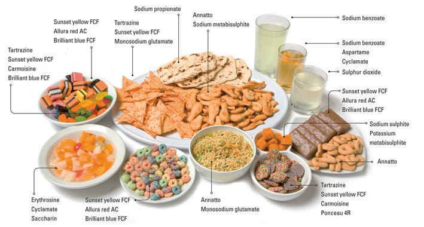
Main Functions:
1. Maintain product consistency
2. Improve or preserve the nutrient value (since most processed foods are stripped of all nutrients… so these nutrients aren’t natural and don’t absorb in our bodies as well)
3. Maintain the wholesomeness of foods
4. Control the acidity and alkalinity, and to proved leavening (this is to ensure microbes/bacterial doesn’t grow in the food)
5. Proved color and enhance flavor
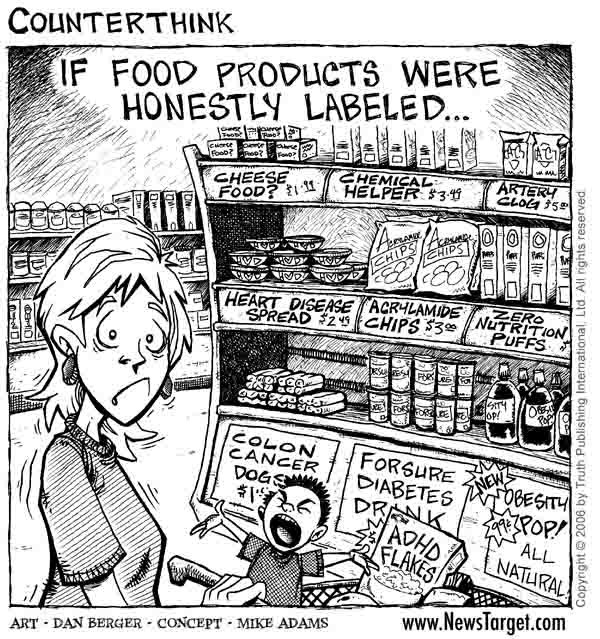
Common Types:
1. Colors
2. Emulsifiers (allows water and oil to mix like in mayonnaise, which helps prevent the growth of molds, especially in low fat spreads)
3. Flavorings (the brain interprets signals from taste, smell, and even vision before turning them into an impression of the food’s taste being sweet, salty, sour, or bitter. When you see something like “raspberry flavor” it’s most likely entirely synthetically made from hundreds of different chemicals, without a hint of a real raspberry in it.)
4. Gelling agents (this gives shape and structure to a substance. Thickeners / thickening agents or stabilizers help maintain the physical and textural properties of food during production, transportation, storage, and even cooking. )
5. Preservatives (Mostly used for their antibacterial properties… preventing mold, fungus, yeast, algae, and other diseases from developing in the food.)
6. Sweeteners (Certain chemicals are used purposely to create food addiction, as in certain sodas… no different from one becoming addicted to a drug)
7. Anti-cake agents (this adds no nutritional value and is only used to increase the “shelf-life” of a product. If one was to bake a cake from scratch, this wouldn’t be needed at all since the ingredients are baked right away. This includes all powder products such as: salt, Betty Crocker mixes, Duncan Hines mixes, pancake mixes, certain seasonings, etc.)
8. Antioxidants (Used to prevent browning in fruit, since it slows the rate of oxidation. Natural forms include: vitamin E and C, lemon juice, etc…. opposed to synthetic forms including: BHA, BHT, TBHQ, propyl gallate, etc.)
9. Acidulants
The problem is that the majority of these additives have either not been tested at all or more commonly haven’t been tested for their long term use (between 20-50 years). Another problem is that many of these studies are based on animal trials, which is difficult to determine whether these results could equate to human health. Despite this, recent studies have proven that some of these additives may still grow cancerous tumors in rats, since they’re being tested for the first time. Also these additives are not tested in combination with other additives and/or medications people may be taking. This is important to know because additives are absorbed into the blood stream just like any chemical/medicine would. This directly affects one’s biochemistry, literally changing and mutation your cells as they create new bonds; which is responsible for a range of things from causing cancer (which is simply any type of degenerative mutation of cells) to food addiction. However, despite this they are still approved by the FDA and you can still find these toxic chemicals in your local supermarket being advertised as “safe.”
Most Dangerous Additives:
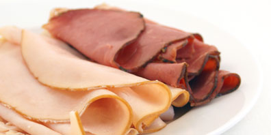
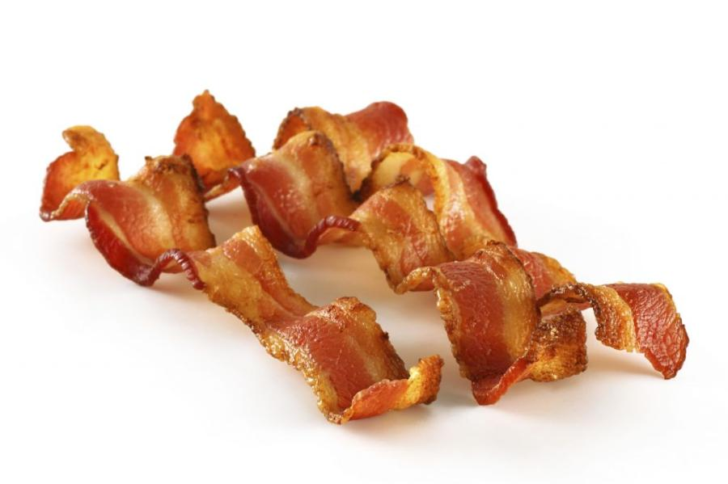
1. Sodium Nitrate, Sodium Nitrite
a. Processed (sandwich) meats such as: bacon, hot dogs, baloney, etc.
b. Preserves color and flavor (meant to keep a red color, but can sometimes be seen as a slight green tint by accident in meats)
c. Develops in very well-done steak
d. Hormel and Oscar Mayer have their own “nitrate-free” line of hot dogs, bacon, sandwich meat, etc.
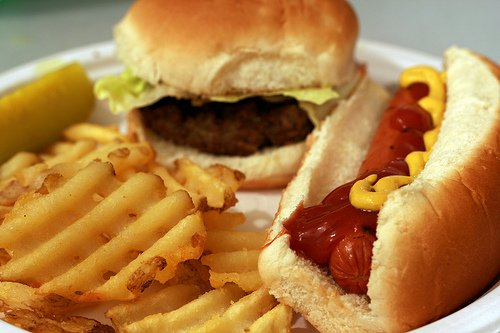
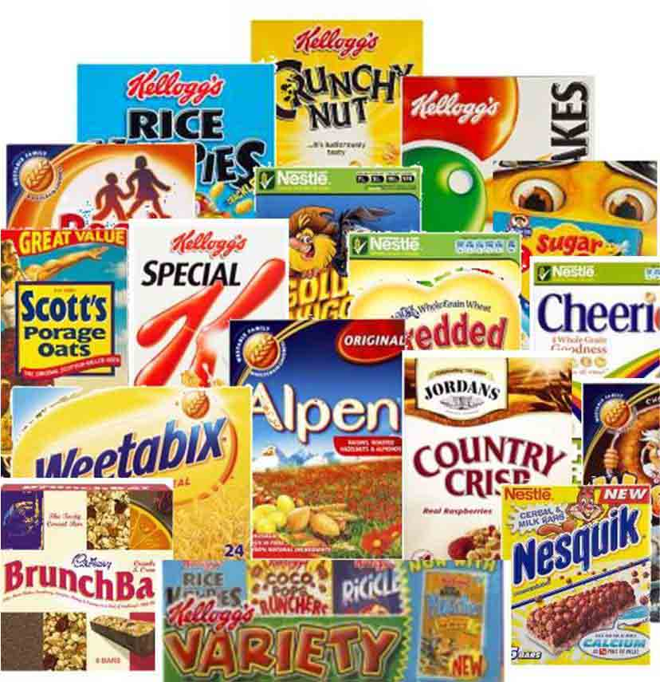
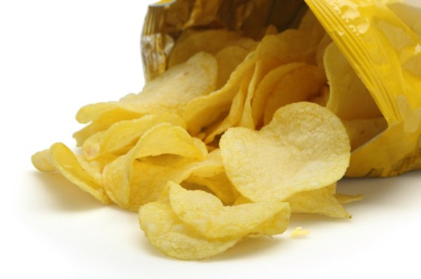
2. BHA and BHT and TBHQ (Butylated Hydroxyanisole and Butylated Hydroxytoluene)
a. Antioxidants added to the food to help preserve the fat… to keep bacteria and mold from growing
b. Found in: Jimmy Dean’s sausages, many cereals (although Kellogg and General Mills tend to not use these chemicals anymore, replacing it with vitamin E, best to check though… Cascadian Farm and Kashi haven’t every used these chemicals, but Kashi isn’t good for diabetics), Ramen instant cup of noodles, potato chips, dog food, etc.
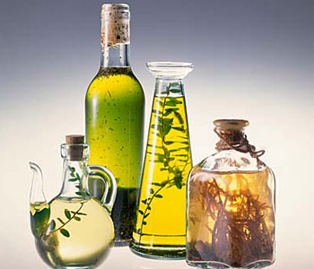
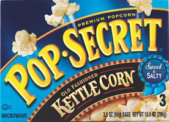
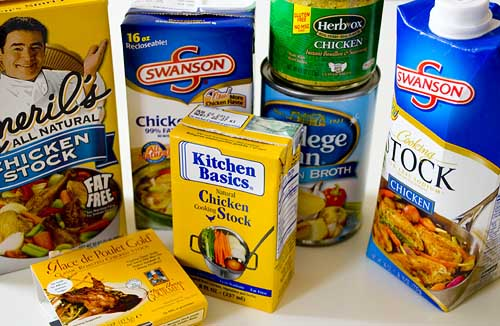
3. Propyl Gallate
a. Preservative for fats and oils (typically used in conjunction with BHA BHT… not as popularly used now)
b. Linked to cancer
c. Found in meat products, chicken soup base, and chewing gum
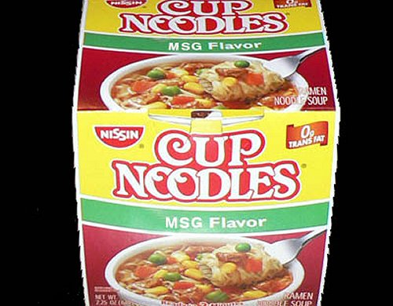
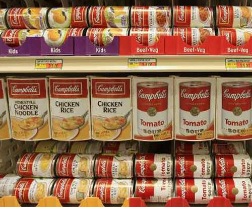
4. Monosodium Glutamate (MSG) (also hydrolyzed soy/vegetable/whey protein, autoliyzed yeast (found through the corporate Whole Foods stores), sodium caseinate, disodium guanylate and disodium inosinate all produce the same unhealthy free glutamic acid)
a. An amino acid used as a flavor enhancer in soups (Progresso, even if labeled “no MSG” it’s likely that free glutamate acid can be found in the product), salad dressing (ranch dressing), soy sauce (except if real soy beans are used), certain spices and seasonings, flavored potato chips (lays), frozen foods, restaurant food (Take-out Chinese, Asian / Oriental foods), and even pre-digested baby formula (for babies allergic to cow’s milk).
b. Causes headaches and nausea, and is linked to nerve cell damage and cancer
c. Salt and chili powder make great replacements
d. Causes free glutamic acid to form in body, which affects the brain causing food addiction. The reason this happens is because MSG was first extracted from seed weed during WWII. Seed weed naturally produce free glutamic acid in the body, but it contains other natural chemicals in it to offset any negative effects. This goes the same for all herbs, when one chemical is extracted from an herb; negative effects tend to happen since the other chemicals in the herb work synergistically offsetting any negative effects in our bodies. MSG then became worst when they started to manufacture it synthetically in the lab.
e. The government has made the GRAS list (which lists additives that are considered to be safe) and MSG has been “grandfathered” into this list… although it’s very clear to see that it is far from being safe. This is a reminder to always do your own research, especially for health information, and get your information from marketing advertisements since they sometimes skew the truth to their benefit and not yours.
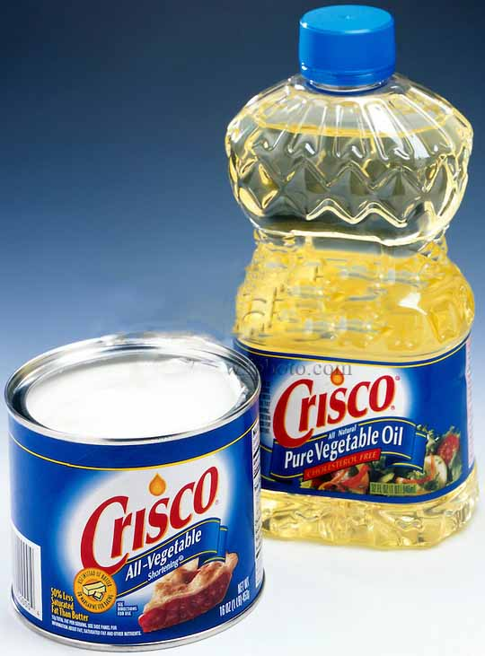
5. Hydrogenated Vegetable Oil (Trans Fats)
a. Causes heart disease and diabetes
b. Found in peanut butter (Jiff, Petter Pan, Skippy add sugar so avoid… instead get natural peanut butter, Smuckers and others have a natural brand peanut butter now… rule of thumb is the less ingredients the better), coffe creamer, I can’t believe it’s not butter (although it’s advertised as having no trans fats, it actually does) country crock butter, most baked goods (like swiss rolls), fast food french fries, etc.
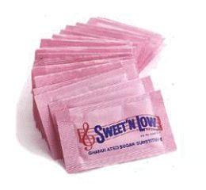
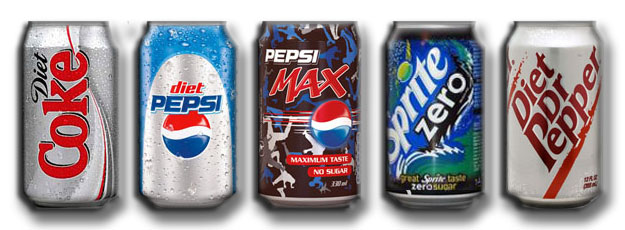
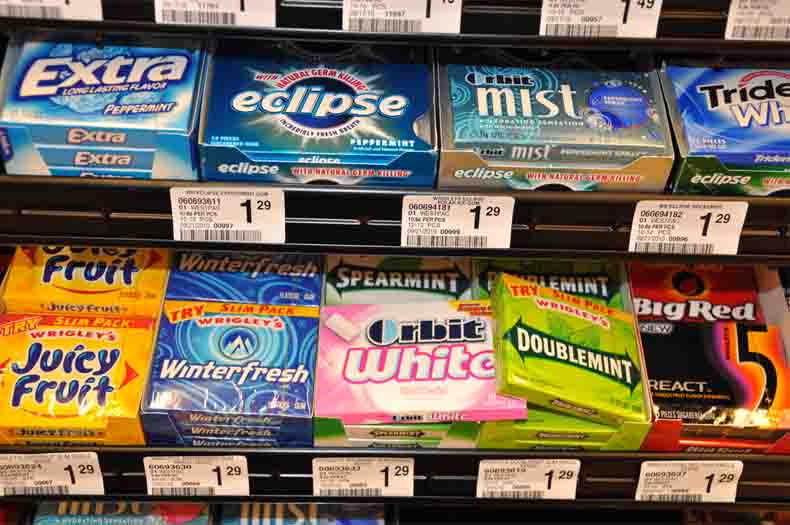
6. Aspartame
a. Click here for more information
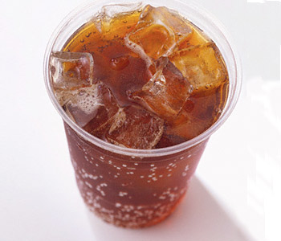
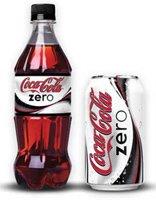
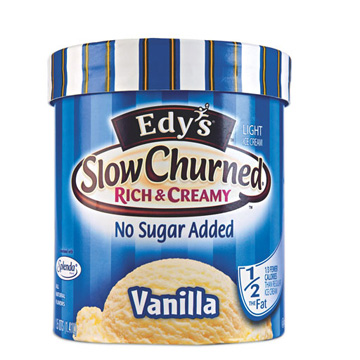
7. Acesulfame-K (Acesulfame Potassium)
a. Relatively new artificial sweetener (approved by FDA in 1998) however further studying and testing is needed to conclude whether this is harmful, so for now just AVOID like the rest of this list
b. 200 times sweeter than sugar
c. Found in a lot of yogurts (Dannon light and fit), soft drinks like coke zero (this is the difference between diet coke and coke zero, the artificial sweetener used), baked goods, chewing gum, and gelatin desserts.
d. Studies have shown that this may cause cancer in rats
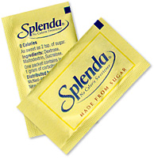
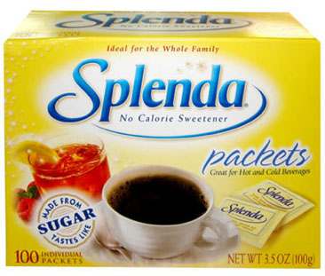
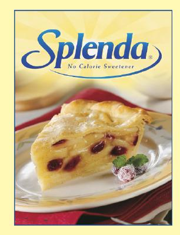
8. Splenda (Sucralose)
a. Has none of the dangerous effects of sugar on the body such as: no calories, no insulin boost, and no cravings caused by food addiction.
b. Natural molecule of sugar, but with a Chlorine attached, which is what makes it unhealthy
c. Can have detrimental effects on Thyroid, Liver, and Kidneys however.
d. Healthier alternative sweeteners include: xylitol, stevia (which is a plant that can help prevent cancer, but don’t eat truvia which is only the sweet part of the plant that was extracted by the coco cola company), and dextrose
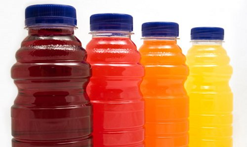
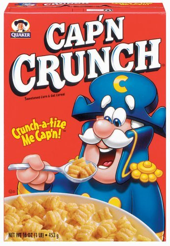
9. Food Colorings
a. Blue #1 and #2, Red #40, #3, and #2 (which is citrus red, that gets injected into some oranges) , Green #3, and Yellow #5 and #6
b. Studies conducted on rats have shown the development of kidney tumors
c. Found in gummy worms, M&Ms, twizzlers, light and fit Yoplait blueberry yogurt, cherry flavored infant Tylenol liquid, Gatorade, kool aid, pet food, nutragrain bars (within the red filling in the middle), cosmetics, medications (possible to get “non-compounded” non-dyed medicines if asked for),”topical” such as deodorants (green 3 is found in men’s Degree deodorants), etc.
d. Yellow #5 (Tartrazine) is the worst food dye… related to server allergic reactions, hives, and asthma, and ADHD. Found within plenty of kids foods (for some reason kids love eating food that is this specific yellow color and of course kids are the most susceptible to these toxins) The following contains this specific color dye: Mac and Cheese, lemon-lime Gatorade, captain crunch, mountain dew, certain pickles, certain flavored lemon ice pops, and even some one-a-day vitamins that are yellow in color, cosmetics, etc.
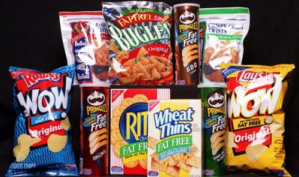
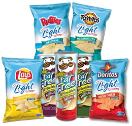

10. Olestra
a. A synthetic fat known as the brand name Olean
b. Prevents fat from getting absorbed in your digestive system
c. Leads to server diarrhea, abdominal cramps, and gas
d. Inhibits healthy vitamin absorption from fat-soluble carotenoids that are found in fruits, etc. Interesting to note is that the manufacturers don’t have to list that their product may decrease your fat soluble vitamin intake, because they have added the fat soluble vitamins to the food. But the thing is any smart person would conclude that if this chip decreases the body’s absorption of these vitamins, then it doesn’t matter if you added them to the food itself or not.
e. Found in WOW chips, and Lays light chips

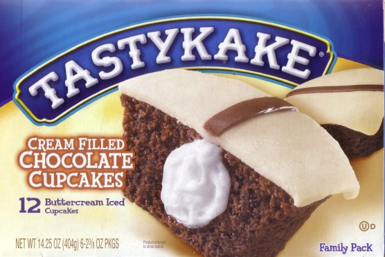
11. Potassium Bromate
a. Causes cancer and thyroid problems
b. Found in Tastykake products and many breads, including fast food buns like Wendy’s, Arby’s, Burger King, Boston Market, etc.
c. Pillsbury and Pepperidge Farm have ceased using this in their products
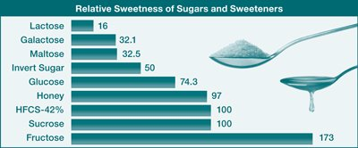
12. White Sugar and High Fructose Corn Syrup
a. We are not meant to eat this on a regular basis; however it can be find in nearly every single “processed” food and even vitamins. Because our tongues adapt to this over time, we will generally start to stop being able to taste other foods that don’t contain high amounts of sugar (also high amounts of salt will destroy our taste buds over time). It is possible that if one cuts out high amounts of sugar and salt then one’s palette will change, and other foods will have stronger and better tastes than they did before.
b. Fructose causes food addiction when artificially placed in our food, unlike glucose which doesn’t. Also, after ingesting fructose 30% ends up as fat, opposed to glucose where none of it ends up as fat. Natural fructose found in fruit has no negative affects however.
c. Refined fructose contains the following toxic effects: raises levels of small dense LDL cholesterol, seven times more likely than glucose to form AGEs, doesn’t suppress the hunger hormone ghrelin nor does it stimulate insulin or leptin, raises triglycerides, linked to insulin resistance and weight gain, feeds cancer cells, and is associated with irritable bowel syndrome, gout, and hyper tension.
d. Healthier alternative sweeteners include: xylitol, stevia (which is a plant that can help prevent cancer, but don’t eat truvia which is only the sweet part of the plant that was extracted by the coco cola company), and dextrose
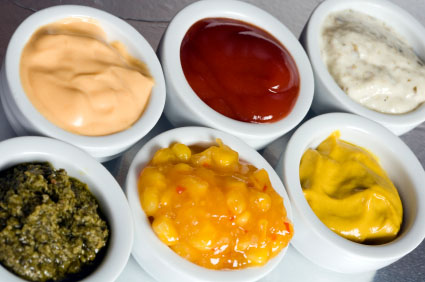
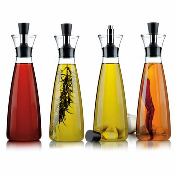
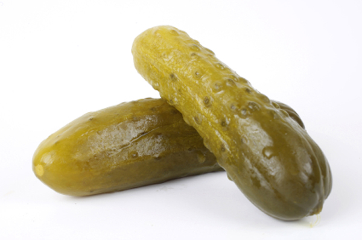
13. Sodium Benzoate, Benzoic Acid
a. Used as a preservative in MOST energy drinks, so chose those without Sodium Benzoate, especially if vitamin C is an ingredient because it then forms Benzene, which is the same chemical that’s found in car exhaust fumes
b. Found in a lot of acidic foods such as salad dressings (vinegar), carbonated drinks (carbonic acid), jams, and fruit juices (citric acid), prickles (vinegar), and condiments
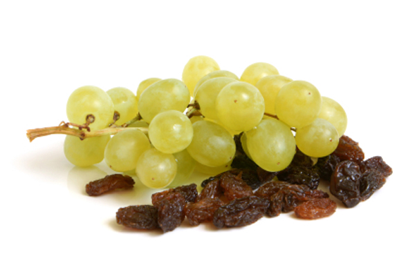
14. Sulfur Dioxide (any Sulfites)
a. Keeps cut fruits and vegetables looking fresh
b. Prevents discoloration / bacteria growth in wine, shrimp, and dried fruits
c. Can provoke severe allergic reactions
d. Linked to asthma and migraine headaches
e. Will destroy B1 (thiamine) in foods
f. Instead buy organic foods
g. In the 1980s, Sodium bisulfite was banned from use on raw fruits and vegetables in the US following the deaths of 13 people who unknowingly consumed produce treated with excessive amounts of the substance.
h. Sulfur dioxide is in the atmosphere as an air pollutant from volcanic gasses and coal-burning power plants.
Wisdom-Square › Food Contamination › Food Additives